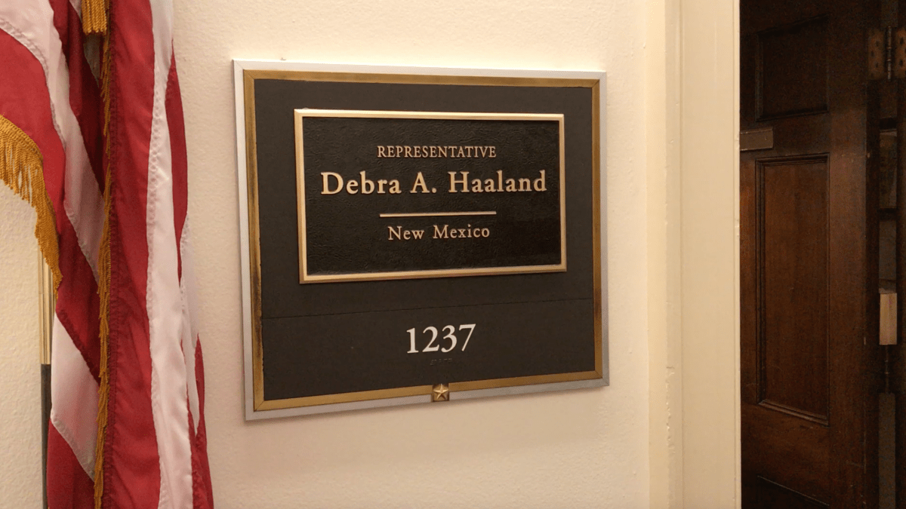
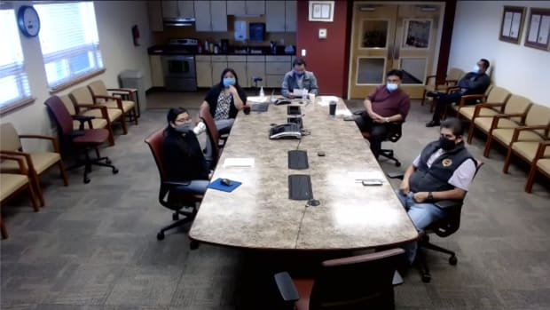

This year's election cycle featured dozens of Indigenous people running for office in all levels of government, along with some history-making firsts.
Miss Indian World Cheyenne Kippenberger hosts virtual Christmas cake decorating competition through Wednesday.
President-elect Joe Biden and Vice President-elect Kamala Harris will formally announce key members of their climate team, which includes New Mexico Rep. Deb Haaland as the selected Secretary of the Interior.

With President-elect Joe Biden selecting U.S. Rep. Deb Haaland as his Interior secretary, many are wondering: What will happen to her position in the U.S. House?
President-elect Joe Biden, in a historic move, has chosen Rep. Deb Haaland to lead the U.S. Interior Department.
The Electoral College formally chose Joe Biden on Monday as the nation’s next president, giving him a solid electoral majority of 306 votes and confirming his victory in last month’s election.
Hashtags, memes, and a twitterstorm. That was the case this week as Indigenous leaders, advocates and allies declared “Deb for Interior” week.
Popular water bottle maker Nalgene is pledging to help the Navajo Nation battle its water crisis by donating part of its sales to citizens who lack access to running water.

Leaders from New Mexico’s 23 sovereign nations will meet virtually with the state’s governor and her administration during a daylong Tribal Leaders Summit on Tuesday.
The weaver who sells their work at flea markets. The beader who markets their work on social media. The jeweler who vends at a local fair.
Nathan Apodaca, Northern Arapaho, talks to Indian Country Today about his newfound fame and message to Indigenous communities.
Thursday is observed by many policy makers, entrepreneurs and activists as “Native Women’s Equal Pay Day,” a campaign to raise awareness about the discrepancies in how much Native women are paid in comparison to others.